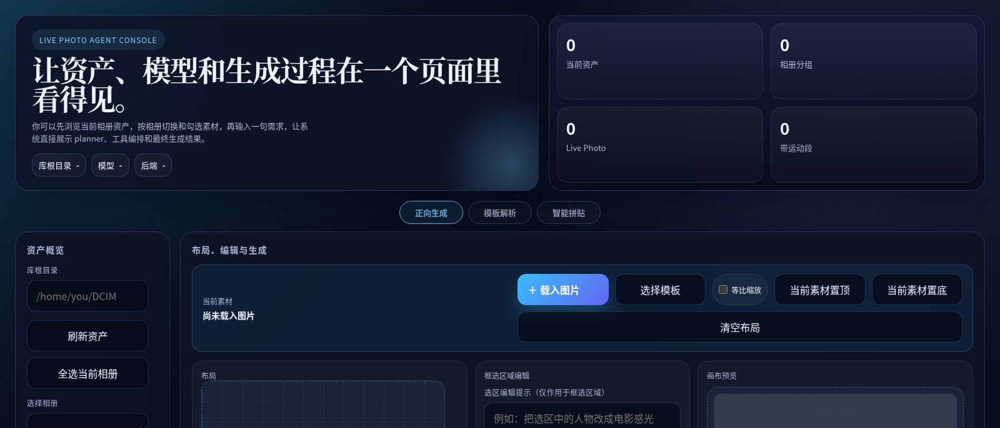
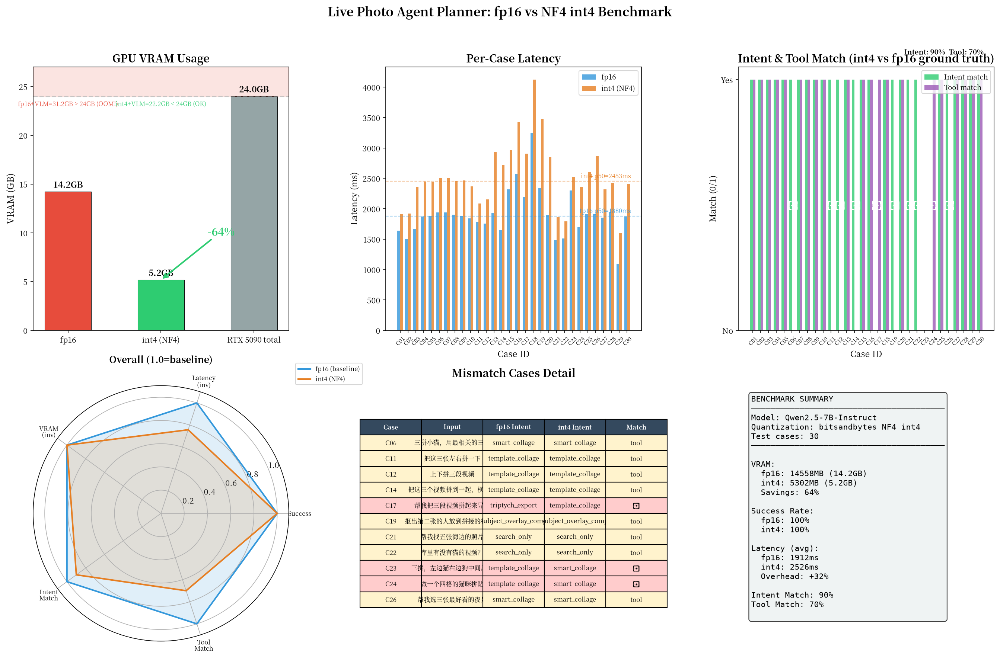
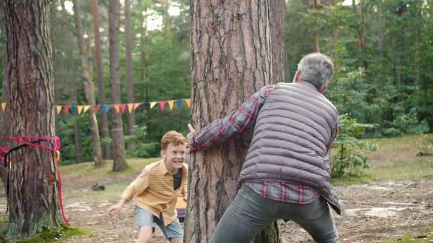
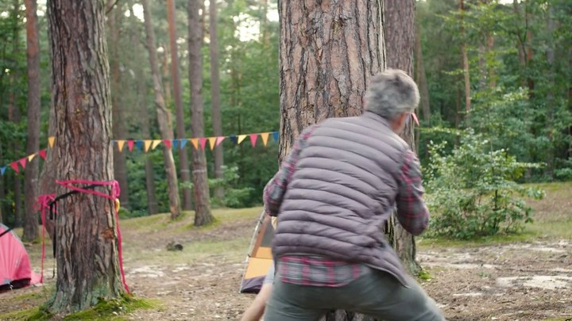
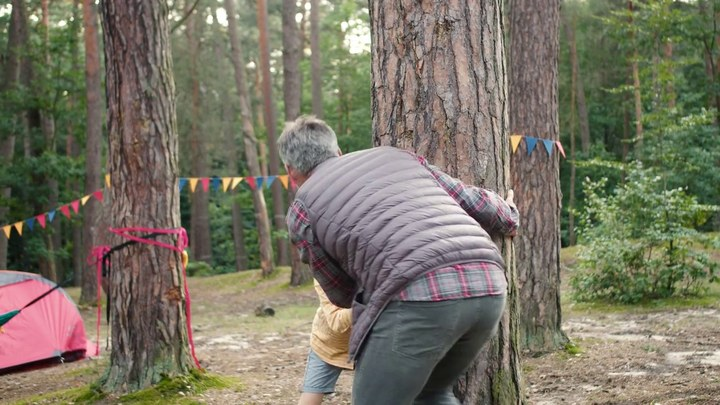
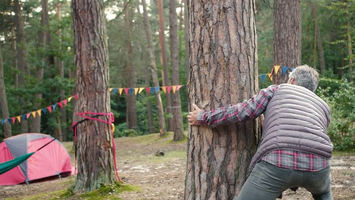
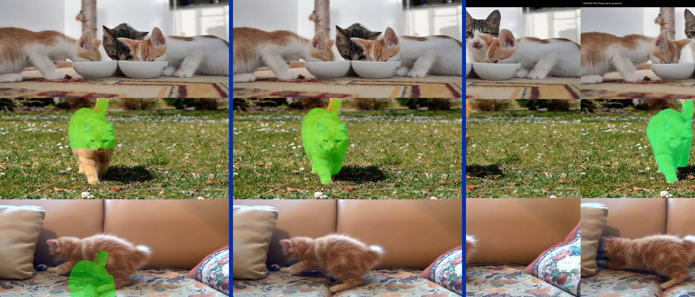
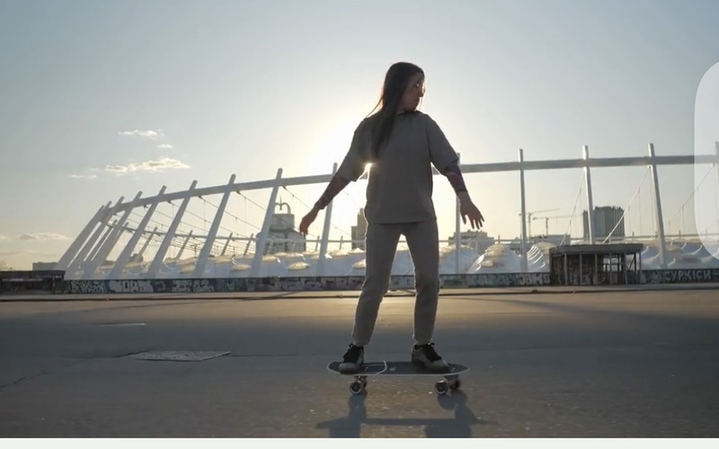
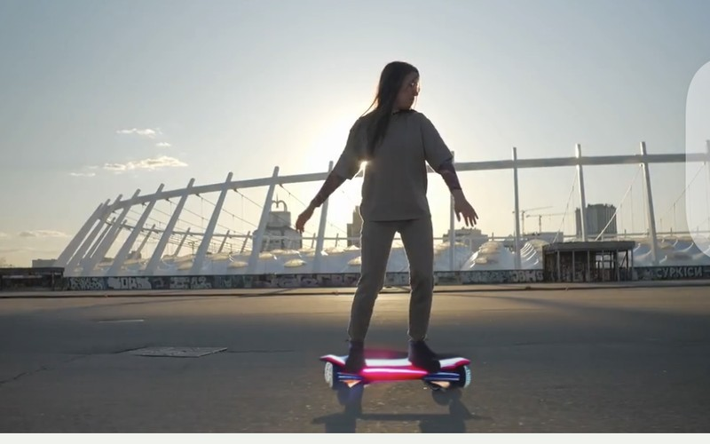
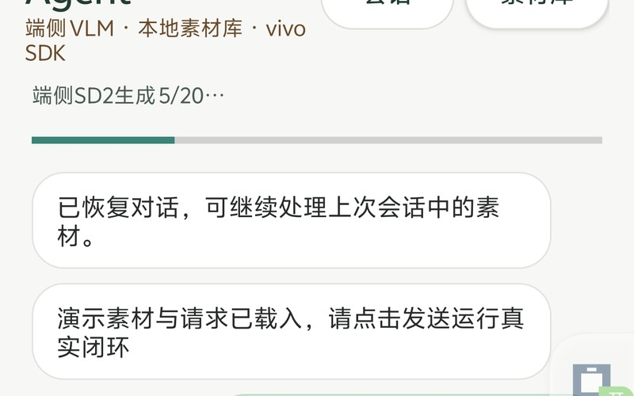

FACT
layout_context、selected IDs、用户原话、Content URI
架构设计、网页端云模型验证、三模型部署、Agent Runtime、厂商 SDK、语言 Grounding 与生成式局部替换。


| 配置 | 成功 | 平均延迟 | VRAM |
|---|---|---|---|
| FP16 | 100% | 1.912s | 14,558MB |
| INT4 | 100% | 2.526s | 5,302MB |
| 跨精度意图一致 | 90% | 工具一致仅 70% | |
| 真实现象 | 根因 | 工程修复 | 形成的长期合同 |
|---|---|---|---|
| qwen-omni-turbo 复述全部 17 个工具，arguments 为空 | Prompt 只给目录，没有要求“只列必要工具”和具体参数 | 严格 ExecutionPlan；工具必须来自 catalog；arguments 非空且类型正确；只允许必要步骤 | 模型输出是候选计划，不是执行许可 |
| qwen-max / plus 空串参数或空 tool array | 不同 endpoint 对 JSON/工具调用协议解释不一致 | Normalization + Schema Validator；无合法计划时澄清或 bounded replan，不用空计划冒充成功 | 协议兼容由适配层承担 |
| --device-input 是死路 模型不知道操作哪个文件 | input_video_paths / input_image_paths 未进入 planner payload | 显式注入真实路径、选择状态、layout assets 与 edit directives；缺素材时必须 NeedUser | 物理输入必须来自系统事实 |
| 画布布局漂移 用户拖拽后模型重新解释坐标 | 把确定性 UI 事实重新翻译成自然语言再规划 | DirectLayoutExecutor / LayoutResolver 直接消费 grid、百分比、层级、时间窗；Planner 不转换坐标 | 坐标与语义分权 |
| 替换后黑槽 / 旧素材复活 多轮状态与规划快照不一致 | 隐式 lastOutput、陈旧 asset_ids 与模板槽位快照 | DialogState + RuntimeState + ArtifactRef；替换只更新槽位 asset_id，几何与时间窗保持 | 后续步骤只能引用当前状态 |
| Endpoint / 凭据 / 隐私依赖 网络与区域配置影响可用性 | 媒体语义和规划都依赖外部服务，无法满足本地设备目标 | 保留相同 ToolName / contract，把 Planner、VLM、检索和执行逐层替换为端侧 backend | 后端可替换，合同不变 |
| 组件 | 职责 | 关键边界 |
|---|---|---|
| LivePhotoSDK 2.4.20.0 | 判断 / 拆包 / 封面 / pack / decode | JPEG+MP4 + timestamp |
| VideoEditorSDK 4.9.0.3 | 裁剪、拼贴、滤镜、变速、倒放、转场 | 媒体格式与输入数量严格校验 |
| MediaEffectSDK 1.3.2.2 | 时间线动效 / XDR 可用路径 | 部分引擎离屏无纹理 |
| ImageProcessSDK / GLES | 图片增强、局部调色与 blur | 需 CPU oracle 与像素差分 |




| 故障 | 修复 |
|---|---|
| 864×288 三帧横拼 | 拒绝：会让预计算 RoPE 与实际 patch 错位 |
| 100% 抽帧返回 null | clamp 到 durationUs−1 |
| frameLimit=3 / MAX=4 漂移 | 默认值直接派生自单一常量 |
| Prompt 仍写“右下为空” | 布局说明按实际 frameCount 生成 |
| 占位符 JSON 语法正确但无语义 | isFilledIn 全字段校验；永久失败 settled |
| 候选死因 | 实测证据 | 结论 | 下一步 |
|---|---|---|---|
| Java / native crash | 无 FATAL、ANR、tombstone；最近 tombstone 是数月前 | 排除主因 | 继续查 ActivityManager |
| OOM / 内存压力 | PRESSURE_IDLE_ABUNDANT；死亡前仍有 10.5GB 可用；37 个连接池约 37MB | 排除主因 | 连接泄漏仍单独修复 |
| 特定素材有毒 | 死亡时间恒为启动后约 13 分钟，进度会从 24 到 38 变化 | 排除 | 按墙钟与温度关联 |
| NPU 系统热保护 | nsphvx=99.7°C；7ms 内 daemonService force-stop 两个无关前台 App，adj=0 仍被杀 | 确认 | 先砍热源再做节流 |
| 场景 | Runtime 行为 |
|---|---|
| “猫三拼”检索出锅/狗/柠檬 | 剥离“三拼”等编辑词；独立 retrieval repair；不可靠则停止 |
| “九拼”没有可执行 compose | 候选数=0 → 结构化原因回喂 → QUESTION；不调用错误 SDK |
| HEVC 倒放无回调 240s | 先 fit 规范化 H.264；倒放置于一次性进程 + 有界重试 |
| UI 保存覆盖 checkpoint | Activity 持久化继承 runtime_state_version/checkpoint |
| SDK / 组件 | 实测可用路径 | 已确认限制 / 不注册能力 | 验证方式 |
|---|---|---|---|
| LivePhotoSDK 2.4.20.0 | 判断、JPEG+MP4 拆包、封面/运动轨道、pack/decode | 时间戳与轨道必须 pack 后立即 decode 核对 | 帧 MD5、AAC bitstream、timestamp、MediaStore 扩展列 |
| VideoEditorSDK 4.9.0.3 | 裁剪、拼贴、镜像、模糊、变速、倒放、转场、画布 | HEVC 倒放不稳定；输入格式和数量严格 | ffprobe + 实际参数作用检查 |
| MediaEffectSDK 1.3.2.2 | 时间线动效、Live XDR 资源查询 | VMEditMotionEffectEngine 离屏不产生纹理 | 真实 probe，不把 API 存在当可用 |
| ImageProcessSDK / GLES | 提亮、锐化、降噪、色调、美颜、局部 tint/blur | processSegmentPoints 不是人像模型；GPUMattingFilter 不能独立驱动 | CPU oracle / 最大 RGB 差 / mask 外变化 |
| 通路 | 请求 | 输出 | 结论 |
|---|---|---|---|
| VMVideoConverter | 整文件转码 | 5.03s / 151f / 1080×1920 / 8.38MB | onCompletion |
| VideoExportEngine | 整文件转码 | 5.03s / 151f / 1920×1080 / 17.63MB | onCompletion |
| VMEditor | start=0 / duration=1000ms | 1.03s / 31f / 1080×1920 / 1.74MB | 编辑参数真实生效 |

| 故障 | 证据 | 修复 / 当前边界 |
|---|---|---|
| QAIRT 2.50 / 2.51 decoder 半幅 Mask 复制 | 两个版本输出的错误 Mask SHA-256 相同；同 DLC 换 runtime 即复现；TFLite/XNNPACK 正确 | 固定 2.45；单帧 IoU 0.9678；具体算子未定位，2.50/2.51 禁用 |
| 动态 validity 图远程正确、vivo 多槽失败 | 同 3-memory/3-pointer：AI Hub 75.85dB，vivo 28.05dB | 去动态 bias，固定 3/3 图恢复 75.48dB；按 cardinality 选图 |
| 公开 recipe 缺 memory attention | 约 2.96M 参数模块未导出；早期 host PyTorch 不等于全 NPU | 补齐 1/1…7/7 与 7/8…7/16 固定图银行 |
| 图银行包体与上下文过大 | 约 560MiB DLC / 234MiB context；weight sharing 返回 0x138f | 研究构建显式开关；包体仍是生产 Gate |
| Locator Android 输入可能漂移 | tokenizer 16 tokens 与 Python 逐项一致；1080×1440 预处理 133.93dB | QNN 2.45 contexts 在 S26 / vivo 输出逐字节一致 |



| 路径 / 问题 | 证据与处理 |
|---|---|
| HTTP / Host SD2 | 先验证 mask 合同与悬浮板语义；Android 始终用本地 source+mask 重合成 |
| OpenCL fp16 / Q4_0 | UNet 可执行但输出全白 → numerical gate 拒绝，不把“无 crash”当成功 |
| Vulkan 512 无 tiling | Adreno driver fault → 固定 256px VAE tile；非法配置启动前拒绝 |
| 时序不是视频扩散 | 生成锚纹理只在显著连通组件和刚性包络传播；旋转/透视/遮挡重入拒绝 |
| 取消与权限 | native cancel 释放 context；模型留私有目录；artifact 永久 publishEligible=false |
内容生成不是起点，而是架构、模型、Runtime、SDK 与生命周期均可证之后的最后一层。